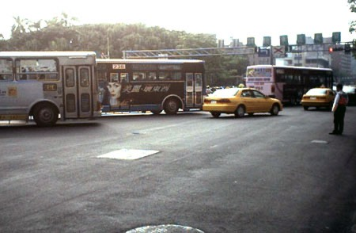
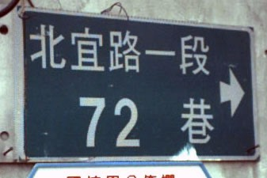

昨天收拾行李。弄到凌晨兩點還沒弄好...在床上翻來覆去，直到三點半還清醒著。
睡眠時間 嚴．重•不．足 =.=
當我睡醒的時候已經是八點了！
揉揉眼睛再看仔細一點，原來是七點...呼..還可以再瞇一下下......不對！已經七點了！？
今天不是可以賴床的日子，趕緊起床，沖涼，收拾昨天洗的衣物。
把還沒放到包包裡的東西，想辦法都塞進去，喝了一點水，早上7:40從家裡出發。
我只帶了一個水壺，裝滿水是600CC，除了這個水壺之外，我沒有其他的水可以喝了。
所以註定了我沿路要向人不停的要水喝 :P
出發時，還很擔心那兩隻老鼠-大馱＆亮亮，等我環島回來，不曉得牠們還活著嗎..
我從新莊沿著平常上學的路線，先騎到台科大（公館）。

在從學校騎到新店，過了捷運站。往前直直走，就會接到北宜路。
也就是今天要努力的目標！（鬥志燃燒小宇宙）

還不到9:00，我已經騎上了北宜公路，速度算還不錯。
北宜其實蠻單純的，不用怕會迷路，直直向前騎就會到達宜蘭了。
路標說，距離坪林有26公里，小意思啦！
下面那個就有點討厭...礁溪65公里...聽起來讓人有點腳酸....
簡單的來說：從一進入北宜，就是天殺的上坡-->上坡-->上坡。
等看到距離坪林還有13公里的路標時，那恭喜你，上坡結束了！
接著就是愉快的下坡-->下坡-->下坡，你不需要踩踏板，就可以一路滑到坪林。
北宜公路看起來就像下面這種感覺
雙向單線道，車流量不很大，有少部份的砂石車跟遊覽車，一般是汽車居多。
當我還在北宜入口處跟上坡奮戰時，很不幸的微薄600CC的水已經全部喝完。
當我瀕臨渴死邊緣之際，看到一間廟...廟裡有桌子...桌子上有茶壺..茶壺裡...有熱茶 =.=
沒有人在顧廟。所以我就自己裝滿了茶，又繼續往前騎，我想我可能是水母之類的轉世。
水一下子又喝完了，而且這附近沒有廟，只有幾間小工廠，而且大多關門休息。
好不容易看到有兩個工人，趕緊前去問他，能不能讓我裝一點水喝（哀求的表情）
工人很阿沙力的送給我一罐加油站牌的礦泉水，重點它還是冰的。
喝完熱茶之後，可以喝冰水，真是人間一大樂事。
我就這樣跟人家要水喝，稍作休息，然後繼續上路，也有要不到水的時候，但也無所謂。
爬到北宜的一個休息處，水又喝完了，看到前面有一家卡拉瓦里庭園咖啡廣場，還有賣點吃的..
我才想到我早餐還沒有吃...從出門到現在，只有喝水跟茶而已。
想說過去裝點水喝，順便看看有沒有好吃的東西。
結果不但裝到了冰水（是滿滿的冰塊，然後再到水進去喔！極品呀！），而且還裝了兩杯 ^^"
不好意思給人家白裝水，所以我就買了兩顆茶葉蛋吃。
結果這一吃就不得了了...老闆娘請我吃了兩根香蕉（我長得像猴子嗎？）
全部吃完之後，老闆娘又烤了一個披薩請我吃，然後還現打了兩杯的香蕉冰沙請我喝。
最後我要上路了，她又拿了四根香蕉給我，要我帶著路上吃 @@"
真是天大的禮遇呀∼我的天 >"< 此恩此德 要如何回報。
我在這邊要跟那個搶生意的流動咖啡店老闆講，你去別的地方開店啦∼不要在這裡搶生意。
老闆娘-葉美鈴很可愛，28歲，已婚，3個孩子，帶著感動的心情繼續上路 T_T
騎腳踏車有種無可取代的快感！
我說得不是將坐墊拔掉的那種騎法...而是當你在騎車時，經過的車輛會突然跟你說一聲『加油！』。
那種感覺真是∼爽到無與倫比，久久不能平復∼無法自己。
一瞬間疲勞全部都消散了，又可以繼續踩下踏板往前走。
今天有五輛車子跟我打招呼，好開心的說∼cccc
我是個超級愛慕虛榮的人。
我怕被太陽烤焦，所以有塗防曬油，運動型的，流汗不會沖掉。
所以當我流汗的時候，會變成下面這樣，汗水會『一顆顆』的長在我的手上，像露珠那樣，讓我傻眼。
吃過免費的大餐，幸運之神也來了，從這邊之後，就是我剛剛說的，下坡-->坪林。
一口氣滑行十幾公里那種心情，難以形容，只覺得剛剛的上坡爬得真是有代價。
才一下子，坪林就到了，一般人都會在坪林休息，加油，尿尿，吃飯，然後再上路。
可是我才剛休息過，也吃飽了，雖然現在快要中午十二點，
可是也沒什麼太陽，所以沒有做任何停留，就繼續上路。
坪林到宜蘭這一段路線，是上坡-->下坡-->上坡-->下坡-->上坡-->上坡-->上坡
（等你快死的時候）-->九彎十八拐到了。
九彎十八拐是一個超級下坡，而且彎度還蠻大的，在下坡之前，有很多商家在這裡24小時營業。
還有一家很有名的茶葉蛋也在這邊賣，有機會吃一定要來吃吃看，口味有什麼不一樣。
我在這邊跟好心的水果攤位，裝了開水（咖啡店的冰水喝完很久了，差點死在路上）。
然後就順著斜坡滑下去∼從高處往下看，是平坦的蘭陽平原。
猜猜看台灣所有的縣市，就『交通方面，離台北最遠的是一個呢？』
答案是宜蘭，宜蘭沒有機場，要去宜蘭只有兩個方法，北宜公路或是濱海公路。
不論是哪一個，都很遠而且花時間。
宜蘭雖然有港口，可是貨物運送出去不方便，所以也成不了氣候，只能當漁港。
施工了好幾年的台北<-->宜蘭快速道路，一直延期延期，現在好不容易要通車了。
通車之後，台北到宜蘭只要20分鐘，現在如果開車從台北到宜蘭，走北宜公路，
快一點的話要兩個小時，差異很大。
囉唆完畢。因為下坡很開心∼沒什麼事做，所以一邊讓車子滑，我一邊拍了很多我騎車時的照片。
我把車子騎的比雲還高說 :P
一路滑下北宜，看到路旁停滿了車子，大塞車，一時之間我還以為前面發生了什麼大車禍。
腳踏車不受塞車的影響，往前看看究竟為什麼塞成這樣，然後我就被條子伯伯攔下來了。 =.=
說是現在正在防空演習，兩點之前所有車輛不能移動。
這種事情..對於很少看電視的我，真有如晴天霹靂！我還以為是要接我去駕駛EVA，
所以才佈下警察封鎖線找我。看來我多慮了。
警察伯伯跟我聊天，問我從哪邊騎過來的，是不是要去環島，要騎幾天..etc。
聊的很開心，然後，他們沒有請我喝飲料，一人拿一罐冰舒跑就在旁邊喝起來，看得我渴的要死 /_\
我下北宜的時候是下午1:30，從家裡出發是7:40，已經騎了六個小時了說！（當然有陸陸續續休息）
不過總覺得下午一點可以騎下北宜，速度還不錯麻∼哈
在那邊休息到兩點，終於又可以重新移動，接著就是蘭陽平原，會先經過礁溪，然後是宜蘭。
礁溪有個名產，是溫泉，不過現在是夏天，所以沒什麼人。人通通跑到蘇澳去洗冷泉了。
冬天的時候則會相反過來，礁溪超級熱鬧這樣！洗個溫泉要到處問有沒有房間，然後要排隊排好久。
所以我建議各位，要去宜蘭的話，最好夏天去洗溫泉，冬天去洗冷泉，逆向操作，比較不會人擠人。 ;)
我有個表姊在礁溪開名產店，賣些蜜餞，鴨賞等宜蘭名產，攜帶的水又喝完了，
所以去找她支援一下。
表姊開的店叫做『上雅』，她請我喝了冰礦泉水，還請我吃了蜜餞。
關於蜜餞，我是想買了在路上可以當糖果吃，結果要付錢的時候，她說要請我。
既然如此，那就不客氣啦 :P
過了礁溪，就是宜蘭，在市區騎車，就不會有人跟你打招呼，大家都很忙。
但是，我被搭訕了..（羞）
有兩個騎腳踏車的摩門教徒（摩門教都騎腳踏車的），騎過來跟我哈拉。
有人聊天騎起車來比較不會無聊，不然就只能聽歌跟看風景。
在往前走就到了二結（位於宜蘭跟羅東的中間），這邊是小時候我長大的地方。
住到我七歲大，要念小學時才返回新莊的家。
看時間是三點左右抵達的，所以我從下北宜到二結騎一個小時，不快不慢∼
今天在這邊過夜，有美食，冰品，床，電風扇，電視，跟浴室。
明天之後，就只有廟宇、洗手台、乾渴的喉嚨、蚊子、汗水，以及路人的加油聲！
我已經有好幾次從新莊騎機車回宜蘭的經驗。
所以今天騎腳踏車，感觸比較沒那麼深刻，只是對於上坡的怨恨，更加的強烈了。
宜蘭的家人，對我騎機車回來，每次都很不高興，說這樣很危險。
可是我騎腳踏車回來，他們居然沒有說什麼，還挺開心的樣子 >"< 。
他們的理由是我騎機車速度太快了，會掉下山，腳踏車只能慢慢騎，比較安全。
今天所花費的費用：茶葉蛋 8元兩顆，一共16元。
有一點感想就是，『完全不累！』，我以為騎回來會累得要死說，但是就這樣到了。
像是騎去飲料店買飲料這樣的感覺而已。
洗過澡，睡了一覺，整理好今天的遊記，現在要下樓吃晚餐去啦，掰∼（揮揮手）！